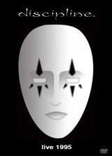

| Artist: | Discipline |
| Title: | Live 1995 |
| Label: | Strung Out Records SOR 6805 |
| Length(s): | 76+66 minutes |
| Year(s) of release: | 2005 |
| Month of review: | [10/2007] |
| 1) | Diminished | |
| 2) | Canto Iv (limbo) | |
| 3) | Carmilla | |
| 4) | The Possession | |
| 5) | Blueprint | |
| 6) | The Nursery Year | |
| 7) | Circuitry | |
| 8) | When The Walls Are Down | |
| 9) | Homegrown |
Extras:
| 1) | Interlude (1988) | 3.52 |
| 2) | Piddle-a-dink (1988) | 1.42 |
| 3) | Piddle Diddle Iddle (1988) | 5.18 |
| 4) | Man And The Locust Part 1/still Night (1992) | 6.14 |
| 5) | Faces Of The Petty (1992) | 5.12 |
| 6) | Mickey Mouse Man (1992) | 5.24 |
| 7) | Man In Transition (1992) | 4.06 |
| 9) | When She Dreams She Dreams In Color (coda) (1997) | 7.22 |
| 10) | Eyeballs Story (1997) | 5.03 |
| 11) | Into The Dream (1997) | 21.45 |
The images shown on the DVD look like they were shot in a dark venue which could not be fully compensated for by the used equipment. Still, there are enough cameras to display that Discipline are, and especially Matthew Parmenter is, able to bring in that extra special bit, thus making this show not simply the playing of several songs, but a performance that manages to draw the attention and keep it. Or is that just me and my liking of the tracks? Of course, Parmenter's make up, in Gabriel-esque style helps a fair bit, as do the simple yet effective costumes. What is most important though are the facial expression and general acting out of the message portrayed in the lyrics, as is the precission of the diction.
The rendition of Canto IV, although quite close to the final recorded version does display a certain inexperience with the material, sounding just that bit less tight, with the occasional error. But what strikes more is that the material presented here in general is stronger than that on Push & Profit.
The extras show an interesting other side of the band. Interlude for instance has a rather noisy type of start, but changes into a melodic progressive type instrumental, as do the other two 1988 tracks following it. After the first track the quality of this footage picks up a lot, after needing to. Even though the 1992 material is vocal, there is not much indication that this band is only a year of realeasing Push & Profit. Most of the songs are pretty plain rocky, only the last two showing progressive content. But then again, non of this material made it onto the band's debut.
The 1997 and 1998 material was recorded when the band was pretty much at its peak. When She Dreams is an instrumental bit which stylistically touches on themes found on Unfolded Like Staircase, but at the end of the day stands its own ground. Eyeballs Story is a story about a boy papercutting his eyeball and then directly stimulating his brain by poking his finger in. Interesting bit, there. The closer is the longest piece from Unfolding, well played, not so well recorded. The brilliance stills shines through, though.